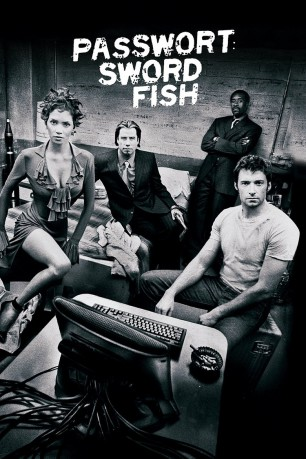

#1595 Passwort: Swordfish
Alternativ: Swordfish
 
 IMDB-Wertung: 6.5 / 10
IMDB-Wertung: 6.5 / 10  Metascore: 32
Metascore: 32 
Nachdem der meisterhafte Hacker Stanley Jobson gefasst und eingesperrt wurde, darf er seine Tochter nach seiner Freilassung nicht mehr sehen. In dieser verzweifelten Lage macht ihm der mächtige Spion Gabriel Shear ein verlockendes Angebot: Stanley soll noch einen einzigen Job erledigen und bekommt als Gegenleistung genug Geld, um sich einen Anwalt leisten zu können, mit dessen Hilfe er das Sorgerecht für seine Tochter einklagen kann.
Jahr: 2001
Dauer: 99 Minuten
FSK: 16
Land: USA Studio: Warner Bros.Tonspuren: DD5.1 - ,
Untertitel:
Auflösung: 1080p (1920x800) Größe: 8140 MB
Genre: Action, Krimi, Thriller
Regisseur:  Dominic Sena
Dominic Sena
Drehbuch: Skip Woods
Soundtrack: Paul Oakenfold, Christopher Young
Darsteller:
 John Travolta als Gabriel Shear
John Travolta als Gabriel Shear Hugh Jackman als Stanley Jobson
Hugh Jackman als Stanley Jobson Halle Berry als Ginger Knowles
Halle Berry als Ginger Knowles Don Cheadle als Agent J.T. Roberts
Don Cheadle als Agent J.T. Roberts Sam Shepard als Senator James Reisman
Sam Shepard als Senator James Reisman Vinnie Jones als Marco
Vinnie Jones als Marco Drea de Matteo als Melissa
Drea de Matteo als Melissa Rudolf Martin als Axl Torvalds
Rudolf Martin als Axl Torvalds Zach Grenier als Assistant Director Bill Joy
Zach Grenier als Assistant Director Bill Joy- Camryn Grimes als Holly Jobson
- Angelo Pagan als Torres
 Chic Daniel als SWAT Leader
Chic Daniel als SWAT Leader Kirk B.R. Woller als Axel's Lawyer
Kirk B.R. Woller als Axel's Lawyer Carmen Argenziano als Agent
Carmen Argenziano als Agent- Tim DeKay als Agent
- Craig Braun als Coroner
 William Mapother als Gabriel's Crew
William Mapother als Gabriel's Crew Ilia Volok als Gabriel's Crew
Ilia Volok als Gabriel's Crew- Jonathan Fraser als Gabriel's Crew
- Shawn Woods als Gabriel's Crew
 Leo Lee als Gabriel's Crew
Leo Lee als Gabriel's Crew- Marina Black als Hostage
- Ann Travolta als Hostage
- Dana Hee als Hostage
 Denney Pierce als Hostage
Denney Pierce als Hostage Jeff Ramsey als Hostage
Jeff Ramsey als Hostage- Debbie Evans als Hostage
- Tim Storms als Hostage
- Jonathan Pessin als Club Kid
- Mark Riccardi als Customs Agent
- Debbie Entin als Helga's Friend
- Anika Poitier als Helga's Friend
 Nick Loren als Dark Suit
Nick Loren als Dark Suit- Brenda Eimers als Holly's Teacher
 Timothy Omundson als Agent Thomas
Timothy Omundson als Agent Thomas Dean Rader-Duval als Security Guard
Dean Rader-Duval als Security Guard- Corinne Chooey als Hostage , uncredited
- Russ Cootey als School Guard , uncredited
- Mark Donnell als Bar Fighter , uncredited
 Tate Donovan als Senator Reisman's Assistant , uncredited
Tate Donovan als Senator Reisman's Assistant , uncredited- Alex Morissen als Nightclub Character , uncredited
 Gary Rodriguez als Precision Driver , uncredited
Gary Rodriguez als Precision Driver , uncredited- George Marshall Ruge als Advertising Executive , uncredited
 Don Yesso als Airport Security , uncredited
Don Yesso als Airport Security , uncredited- Laura Lane als Helga
- Tait Ruppert als Ad Agency Executive
- Kerry Kletter als Hostage
- Ryan Wulff als Hostage
- Margaret Travolta als Hostage
- Joey Box als Hostage
Datei: X:\2001\Passwort Swordfish (2001, FSK16, 1920x800).mkv seit 24.07.2015
Festplatte: HD 1996-2002
 Es gibt insgesamt 102 Filme in der Gruppe '2001'
Es gibt insgesamt 102 Filme in der Gruppe '2001'